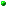
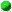

[all packages]
[package zeta.agl]
[class hierarchy]
[index]
public abstract class zeta.agl.Map<A, B>
(source file: Map.pizza)
java.lang.Object
|
+----zeta.agl.Aggregate<Pair<A, B>>
|
+----zeta.agl.Map<A, B>
The pure class interface.
public abstract class Map<A, B>
extends Aggregate<A>
- The basic aggregate class of finite mappings. This abstract class
is superclass of diverse implementation variants of mappings.
- Version: $Id: Map.pizza,v 1.2 1998/12/15 12:05:24 buessow Exp $

 Map()
Map()
-

 apply((A, B) -> void)
apply((A, B) -> void)
- FIXME: to be implemented more efficiently
- compose(Map<B, C>)
- Compose another mapping with this mapping.
- define(A, B)
- Define element to map to value, perhaps overwriting an older
definition.
- defineAll(Aggregate<A>, Aggregate<B>)
- Take elements and values from two other aggregates and pairwise
define them in the map
- defineAll(Aggregate<Pair<A, B>>)
- Take the pairs from another aggregate and define them in the map.
- defines(A)
- Test if element is defined in this mapping.
- definesAll(Aggregate<A>)
- Test if all the elements of another aggregate are defined
in this mapping.
- domain()
- Get the domain of this mapping as a set.
- filter((A, B) -> boolean)
- Filter this mapping.
- get(A)
- Get value element is mapped to
- getAll(Aggregate<A>)
- Get sequence of values assigned to elements of the given
aggregate in this map
- map((B) -> C)
- Map a function over the range of this mapping.
- mapWithDom((A, B) -> C)
- Map a function over the range of this mapping, with domain
element passed.
- merge(Map<A, C>, (A, Option<B>, Option<C>) -> Option<D>)
- Merge another mapping with this mapping
- range()
- Get the range of this mapping as a sequence.
- replace(A, B)
- Replace a definition, returning its old value
- toFormat(FormatInfo)
- Generate a default format for the contents of the mapping.

tryGet(Map<C, D>, C)
- Get value element is mapped to, or null if their is no mapping.
Only provided for mappings to
- undefine(A)
- Undefine element in the map, if it has a definition.
- undefineAll(Aggregate<A>)
- Undefine elements from another aggregate.

 Map
Map
public Map();

 defines
defines
public abstract boolean defines(A elem);
- Test if element is defined in this mapping.
definesAll
public boolean definesAll(Aggregate<A> other);
- Test if all the elements of another aggregate are defined
in this mapping.
define
public Map<A, B> define(A elem,
B value);
- Define element to map to value, perhaps overwriting an older
definition.
defineAll
public abstract Map<A, B> defineAll(Aggregate<Pair<A, B>> other);
- Take the pairs from another aggregate and define them in the map.
defineAll
public Map<A, B> defineAll(Aggregate<A> elems,
Aggregate<B> values)
throws NoSuchElementException;
- Take elements and values from two other aggregates and pairwise
define them in the map.
- Throws:
- NoSuchElementException -if the aggregates have not
the same size.
-
replace
public Pair<Map<A, B>, B> replace(A elem,
B value)
throws NoSuchElementException;
- Replace a definition, returning its old value.
- Throws:
- NoSuchElementException -if element is not defined
in map.
-
undefine
public Map<A, B> undefine(A elem);
- Undefine element in the map, if it has a definition.
undefineAll
public abstract Map<A, B> undefineAll(Aggregate<A> other);
- Undefine elements from another aggregate.
get
public abstract B get(A elem)
throws NoSuchElementException;
- Get value element is mapped to.
- Throws:
- NoSuchElementException -if element is not defined
in mapping.
-

tryGet
public static <C, D> D tryGet(Map<C, D> map,
C elem);
- Get value element is mapped to, or null if their is no mapping.
Only provided for mappings to objects.
getAll
public Seq<B> getAll(Aggregate<A> elems)
throws NoSuchElementException;
- Get sequence of values assigned to elements of the given
aggregate in this map.
- Throws:
- NoSuchElementException -if any of the elements in
aggregate is not defined in map.
-
domain
public Set<A> domain();
- Get the domain of this mapping as a set.
range
public Seq<B> range();
- Get the range of this mapping as a sequence.
mapWithDom
public abstract <C> Map<A, C> mapWithDom((A, B) -> C f);
- Map a function over the range of this mapping, with domain
element passed.
map
public <C> Map<A, C> map((B) -> C f);
- Map a function over the range of this mapping.
filter
public Map<A, B> filter((A, B) -> boolean p);
- Filter this mapping.
compose
public <C> Map<A, C> compose(Map<B, C> other)
throws NoSuchElementException;
- Compose another mapping with this mapping.
- Throws:
- NoSuchElementException - if any element of the range
of this mapping is not defined in the domain of the other
mapping.
-
merge
public <C, D> Map<A, D> merge(Map<A, C> other,
(A, Option<B>, Option<C>) -> Option<D> mf);
- Merge another mapping with this mapping.
- Parameters:
- mf - the entry merging function. It is called for each element
in the domain of this or the other mapping. The range
values of both mappings are passed as optional values,
where either one or both will be available. If the returned
option is not available, no definition will be made in
the resulting mapping.
apply
public void apply((A, B) -> void f);
- FIXME: to be implemented more efficiently
toFormat
public Format toFormat(FormatInfo info);
- Generate a default format for the contents of the mapping.
- Overrides:
- toFormat in class Aggregate
[all packages]
[package zeta.agl]
[class hierarchy]
[index]
zeta.agl.Map.html